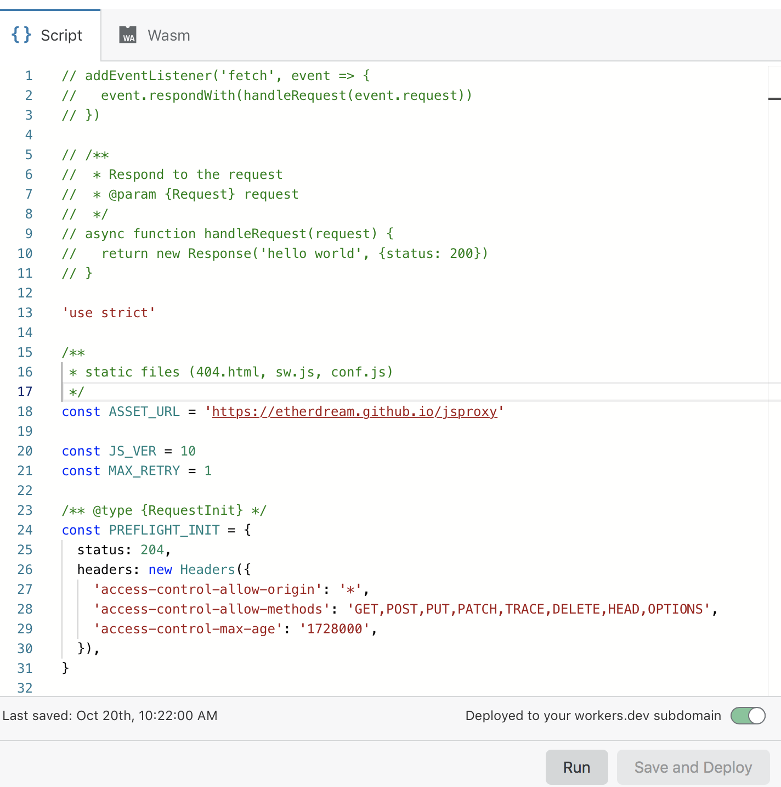

当前可用的搜索引擎存在很多不足，在此提供一种方便的搭载方法...
方法
在cloudflare上注册一个账号 新建一个worker  然后写入下面代码，保存并发布
'use strict'
/**
* static files (404.html, sw.js, conf.js)
*/
const ASSET_URL = 'https://etherdream.github.io/jsproxy'
const JS_VER = 10
const MAX_RETRY = 1
/** @type {RequestInit} */
const PREFLIGHT_INIT = {
status: 204,
headers: new Headers({
'access-control-allow-origin': '*',
'access-control-allow-methods': 'GET,POST,PUT,PATCH,TRACE,DELETE,HEAD,OPTIONS',
'access-control-max-age': '1728000',
}),
}
/**
* @param {any} body
* @param {number} status
* @param {Object} headers
*/
function makeRes(body, status = 200, headers = {}) {
headers['--ver'] = JS_VER
headers['access-control-allow-origin'] = '*'
return new Response(body, {status, headers})
}
/**
* @param {string} urlStr
*/
function newUrl(urlStr) {
try {
return new URL(urlStr)
} catch (err) {
return null
}
}
addEventListener('fetch', e => {
const ret = fetchHandler(e)
.catch(err => makeRes('cfworker error:\n' + err.stack, 502))
e.respondWith(ret)
})
/**
* @param {FetchEvent} e
*/
async function fetchHandler(e) {
const req = e.request
const urlStr = req.url
const urlObj = new URL(urlStr)
const path = urlObj.href.substr(urlObj.origin.length)
if (urlObj.protocol === 'http:') {
urlObj.protocol = 'https:'
return makeRes('', 301, {
'strict-transport-security': 'max-age=99999999; includeSubDomains; preload',
'location': urlObj.href,
})
}
if (path.startsWith('/http/')) {
return httpHandler(req, path.substr(6))
}
switch (path) {
case '/http':
return makeRes('请更新 cfworker 到最新版本!')
case '/ws':
return makeRes('not support', 400)
case '/works':
return makeRes('it works')
default:
// static files
return fetch(ASSET_URL + path)
}
}
/**
* @param {Request} req
* @param {string} pathname
*/
function httpHandler(req, pathname) {
const reqHdrRaw = req.headers
if (reqHdrRaw.has('x-jsproxy')) {
return Response.error()
}
// preflight
if (req.method === 'OPTIONS' &&
reqHdrRaw.has('access-control-request-headers')
) {
return new Response(null, PREFLIGHT_INIT)
}
let acehOld = false
let rawSvr = ''
let rawLen = ''
let rawEtag = ''
const reqHdrNew = new Headers(reqHdrRaw)
reqHdrNew.set('x-jsproxy', '1')
// 此处逻辑和 http-dec-req-hdr.lua 大致相同
// https://github.com/EtherDream/jsproxy/blob/master/lua/http-dec-req-hdr.lua
const refer = reqHdrNew.get('referer')
const query = refer.substr(refer.indexOf('?') + 1)
if (!query) {
return makeRes('missing params', 403)
}
const param = new URLSearchParams(query)
for (const [k, v] of Object.entries(param)) {
if (k.substr(0, 2) === '--') {
// 系统信息
switch (k.substr(2)) {
case 'aceh':
acehOld = true
break
case 'raw-info':
[rawSvr, rawLen, rawEtag] = v.split('|')
break
}
} else {
// 还原 HTTP 请求头
if (v) {
reqHdrNew.set(k, v)
} else {
reqHdrNew.delete(k)
}
}
}
if (!param.has('referer')) {
reqHdrNew.delete('referer')
}
// cfworker 会把路径中的 `//` 合并成 `/`
const urlStr = pathname.replace(/^(https?):\/+/, '$1://')
const urlObj = newUrl(urlStr)
if (!urlObj) {
return makeRes('invalid proxy url: ' + urlStr, 403)
}
/** @type {RequestInit} */
const reqInit = {
method: req.method,
headers: reqHdrNew,
redirect: 'manual',
}
if (req.method === 'POST') {
reqInit.body = req.body
}
return proxy(urlObj, reqInit, acehOld, rawLen, 0)
}
/**
*
* @param {URL} urlObj
* @param {RequestInit} reqInit
* @param {number} retryTimes
*/
async function proxy(urlObj, reqInit, acehOld, rawLen, retryTimes) {
const res = await fetch(urlObj.href, reqInit)
const resHdrOld = res.headers
const resHdrNew = new Headers(resHdrOld)
let expose = '*'
for (const [k, v] of resHdrOld.entries()) {
if (k === 'access-control-allow-origin' ||
k === 'access-control-expose-headers' ||
k === 'location' ||
k === 'set-cookie'
) {
const x = '--' + k
resHdrNew.set(x, v)
if (acehOld) {
expose = expose + ',' + x
}
resHdrNew.delete(k)
}
else if (acehOld &&
k !== 'cache-control' &&
k !== 'content-language' &&
k !== 'content-type' &&
k !== 'expires' &&
k !== 'last-modified' &&
k !== 'pragma'
) {
expose = expose + ',' + k
}
}
if (acehOld) {
expose = expose + ',--s'
resHdrNew.set('--t', '1')
}
// verify
if (rawLen) {
const newLen = resHdrOld.get('content-length') || ''
const badLen = (rawLen !== newLen)
if (badLen) {
if (retryTimes < MAX_RETRY) {
urlObj = await parseYtVideoRedir(urlObj, newLen, res)
if (urlObj) {
return proxy(urlObj, reqInit, acehOld, rawLen, retryTimes + 1)
}
}
return makeRes(res.body, 400, {
'--error': `bad len: ${newLen}, except: ${rawLen}`,
'access-control-expose-headers': '--error',
})
}
if (retryTimes > 1) {
resHdrNew.set('--retry', retryTimes)
}
}
let status = res.status
resHdrNew.set('access-control-expose-headers', expose)
resHdrNew.set('access-control-allow-origin', '*')
resHdrNew.set('--s', status)
resHdrNew.set('--ver', JS_VER)
resHdrNew.delete('content-security-policy')
resHdrNew.delete('content-security-policy-report-only')
resHdrNew.delete('clear-site-data')
if (status === 301 ||
status === 302 ||
status === 303 ||
status === 307 ||
status === 308
) {
status = status + 10
}
return new Response(res.body, {
status,
headers: resHdrNew,
})
}
/**
* @param {URL} urlObj
*/
function isYtUrl(urlObj) {
return (
urlObj.host.endsWith('.googlevideo.com') &&
urlObj.pathname.startsWith('/videoplayback')
)
}
/**
* @param {URL} urlObj
* @param {number} newLen
* @param {Response} res
*/
async function parseYtVideoRedir(urlObj, newLen, res) {
if (newLen > 2000) {
return null
}
if (!isYtUrl(urlObj)) {
return null
}
try {
const data = await res.text()
urlObj = new URL(data)
} catch (err) {
return null
}
if (!isYtUrl(urlObj)) {
return null
}
return urlObj
}